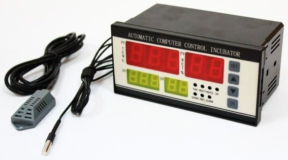

The beginning. You can buy an adult chickens, but you will have more fun and knowledge as well, if you buy just eggs and make your own incubator. It is not too difficult, but you will know your chicks from the wery beggining. Let start.
This is a list with stuff you need:
That is it. I believe, you can get it on AliExpress for about $100
The most complicated thing is automatic controller. I suggest you buying XM-18, it costs about $20 and provides you sufficient numbers of features (you can control temperature, moisture, ventilation, eggs rotating, and it has emergency alarm as well).
Next step - to make a box 1m X 1m X 1m from PE. Fix a heating mat to one wall. I separated this mat from the rest volume ob the box with a piece of PE. Above mat I fixed a fan, it will blow air along the mat. It will help to keep the same temperature and moisture in the box. On the bottom of the box put some plastic container without a lid. Water will vapor and keep normal moisture at the proper level. Then make two holes. On close to the bottom of the box, another close to the top of it in the opposite wall. Connect fan to the bottom one. In the top one fix a check valve. This will allow you to lower temperature or|and moisture if you will need it and let in fresh air. Now make support for rotating mechanism - you will put egs in it. You have to rotate eggs to prevent damage (otherwise yolk will stick to the eggs shell). Now connect all your devices to the controller. That is it. Just start do it and you will have your own incubator.